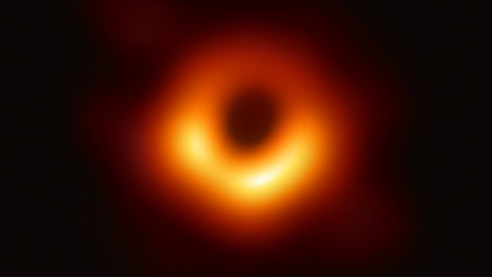
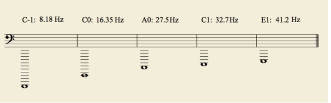
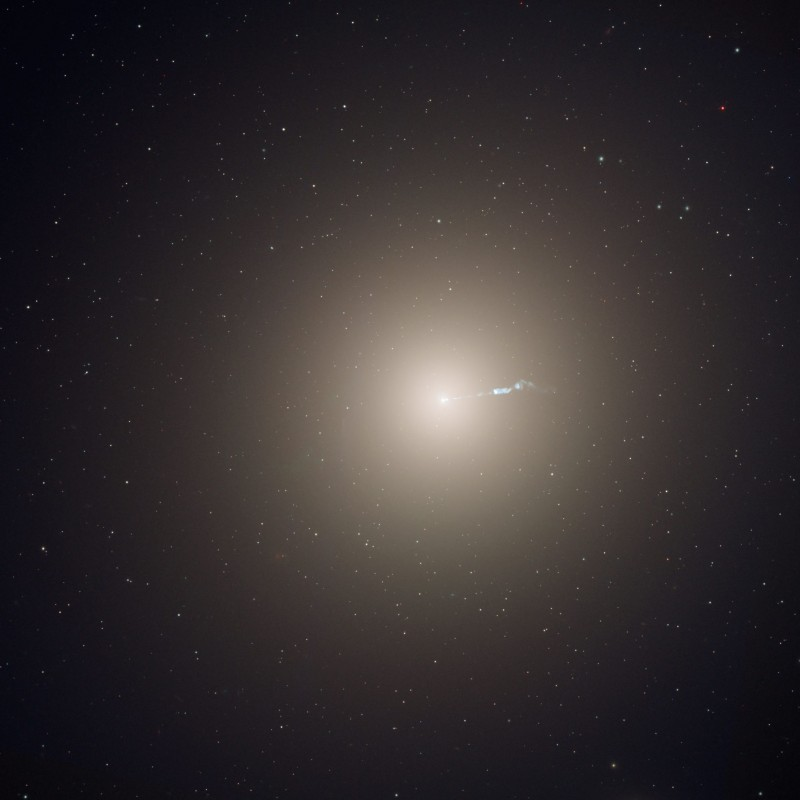

// astronomía · sonificación · organoloxía
Cacofonía dun buraco negro supermasivo

Segundo as observacións do Observatorio de raios X Chandra da NASA, un xigantesco estampido sónico e unha profunda cacofonía periódica de son emanaron do buraco negro supermasivo coñecido como Powehi, situado no centro da galaxia M87. Pero antes de mergullarnos na dimensión cósmica do fenómeno, convén construír un marco de referencia sonoro máis próximo á nosa experiencia cotiá.
Cal é o son máis grave da natureza?
O son é unha das dimensións da realidade que o ser humano percibe de maneira directa a través do sentido do oído. Mediante un proceso físico-fisiolóxico e psíquico, o aparato auditivo transforma as variacións de presión do aire en información perceptible e significativa. O rango sonoro do oído humano sitúase, de forma xeral, entre os 20 Hz e os 20.000 Hz, aínda que estes límites varían segundo a idade e as condicións de cada persoa.
Pondo ao carón os ruídos e sons da vida cotiá, resulta iluminador deternos nos sons producidos polos instrumentos musicais. A súa organización sistemática —por timbre, tesittura e rexistro— ofréceunos un modelo de comprensión que nos permitirá situar, ao final deste artigo, a magnitude acústica do fenómeno que imos describir.
O buraco negro atópase no centro de M87, unha galaxia elíptica próxima dentro do cúmulo de Virgo. Os científicos detectaron bucles e aneis no gas quente que emite raios X, estruturas que proporcionan evidencia de erupcións periódicas xeradoras de ondas de presión —maniféstanse como son— que retumbaron no cúmulo durante a maior parte da vida do universo.
Instrumentos musicais: limiares do grave
Cando pensamos nos sons máis graves dunha orquestra, o primeiro instrumento que nos vén á mente é o contrabaixo —o maior da familia das cordas frotadas—. Non obstante, o concepto de "rexistro baixo" é máis amplo: abarca, de forma xeral, frecuencias comprendidas entre os 30 Hz e os 294 Hz aproximadamente. A nota máis grave dun piano convencional é o La grave, denominado A0, cunha frecuencia de 27,50 Hz.
Piano A0 (27,50 Hz) · Nota máis grave do piano convencional
Este límite superárano algúns órganos de catedral e o piano Imperial Bösendorfer, cuxa extensión especial de teclas negras permite soar unha sexta maior máis grave que o A0, chegando ata o Do grave: C0, a 16,35 Hz.
Imperial Bösendorfer · Do grave C0 (16,35 Hz)
Nos instrumentos de metal, a tuba, nas mans dun instrumentista experto, pode aproximarse a este rexistro infragrave, aínda que con dinámica reducida e escasa presenza acústica.
Tuba — rexistros graves extremos
O contrabaixo (double bass) chega aproximadamente ao Si do primeiro rexistro (B1), que equivale a case unha oitava por encima do C0 do Bösendorfer.
Contrabaixo · Rexistro grave extremo (B1 · 30,87 Hz)
Mencionemos, por último, dous casos singulares que empuxan a fronteira acústica ata o límite da percepción humana. O clarinete octocontrabaixo, do que existe un único exemplar —construído polo luthier G. Leblanc e rexistrado no Guinness dos Récords como o instrumento orquestral capaz de producir a nota máis grave—, alcanza un Sib grave cunha frecuencia de 14,57 Hz: claramente no territorio do infrason, fóra do limiar normal de escoita. Aínda que só se construíu un exemplar, existen tres obras compostas para el co acompañamento orquestral.
Clarinete octocontrabaixo · Sib-1 (14,57 Hz) · único exemplar en existencia
De xeito semellante, o gran órgano do Town Hall de Sydney baixa ata o Do gravísimo C-1 (8,18 Hz), cunha tubaxe máis longa de 19 metros. A esta frecuencia xa non é posible falar de son audible en sentido estrito: é vibración.
Órgano do Town Hall de Sydney · C-1 (8,18 Hz) · tubo de 19 metros
A seguinte ilustración sintetiza graficamente, sobre o pentagrama en clave de Fa, os rexistros extremos que acabamos de percorrer:

M87: unha galaxia lonxana e o seu buraco negro
A galaxia M87 é hoxe amplamente coñecida por varias razóns. A máis espectacular chegou en 2019, cando a colaboración Event Horizon Telescope (EHT) fixo pública a primeira imaxe directa dun buraco negro: a que corresponde ao centro desta galaxia elíptica. Buscada durante décadas, esta imaxe proporcionou a evidencia máis sólida ata a data da existencia dos buracos negros supermasivos e abriu unha xanela inédita ao estudo dos seus horizontes de eventos e dos efectos da gravidade extrema.
O buraco negro de M87, bautizado Powehi, ten un tamaño comparable ao do noso sistema solar e atópase a uns 53 millóns de anos luz da Terra —preto de 500 billóns de billóns de quilómetros—. As investigacións indican que no bordo do buraco negro as ondas magnéticas acadan intensidades tan descomunais que o gas circundante resiste á atracción gravitatoria e é expulsado cara ao exterior, impulsando potentes chorros relativistas que se estenden moi alá da propia galaxia.

A lira de Apolo: o son do buraco negro
As observacións do Observatorio de raios X Chandra da NASA revelaron algo extraordinario: un xigantesco estampido sónico e unha profunda cacofonía periódica de presión acústica emanan do buraco negro supermasivo Powehi, no corazón de M87.
O mecanismo é o seguinte: cando o material cae cara ao buraco negro, a maior parte é engulida, pero unha fracción é expulsada violentamente en chorros desde rexións próximas ao horizonte de eventos, que empurran contra o gas quente do cúmulo de Virgo. Este proceso repítese cada poucos millóns de anos e xera ondas de presión que se propagan polo gas intracúmulo, impedindo que este se arrefríe e forme novas estrelas. De aí que M87 conserve a súa morfoloxía elíptica.
"Moitos sons profundos e diferentes estiveron retumbando a través deste cúmulo durante a maior parte da vida do universo."
— William Forman, Centro Harvard-Smithsoniano de Astrofísica
A imaxe Chandra de M87 en raios X de alta enerxía permite identificar estas estruturas con precisión. O anel exterior —con uns 85.000 anos luz de diámetro— é a firma inequívoca dunha onda de choque débil (un estampido sónico cósmico) xerada por un estalido do buraco negro. O anel interior, de cor amarela intensa, sería o gas inmediatamente fóra do "pistón" que impulsa o choque cara ao exterior; o anel intermedio, probablemente, o rastro dun estalido anterior. (Crédito: NASA / CXC / CfA / W. Forman et al.)
O son de buracos negros detectouse previamente noutros contextos. Nun caso anterior, o buraco negro do cúmulo de Perseo calculouse que emitía a través do gas unha nota situada unhas 57 oitavas por baixo do Do central. O caso de Powehi é máis complexo e máis profundo aínda: algunhas ondas de presión implican frecuencias ao redor de 56 oitavas por baixo do Do central (C3), mentres que os grandes estampidos sónicos corresponden a notas próximas ás 58 ou 59 oitavas por baixo dese mesmo Do.
"Se este buraco negro non estivese a facer todo este ruído, M87 podería ser un tipo de galaxia completamente diferente, posiblemente unha enorme galaxia espiral unhas 30 veces máis brillante que a Vía Láctea."
— Paul Nulsen, membro do equipo de investigación
Para dimensionar esta magnitude de xeito intuitivo, lembremos o percorrido feito na primeira sección: os sons máis graves producidos polos instrumentos de baixo rexistro —como o gran órgano de Sydney ou o clarinete octocontrabaixo— chegan ata catro oitavas por baixo do Do central. O buraco negro de M87 soaría, de seren perceptible, entre 52 e 55 oitavas máis baixo que o instrumento más grave que existe sobre a Terra. Non hai escala musical —nin organoloxía— que permita abarcar tal abismo acústico. Estamos ante o son máis grave da natureza coñecida.